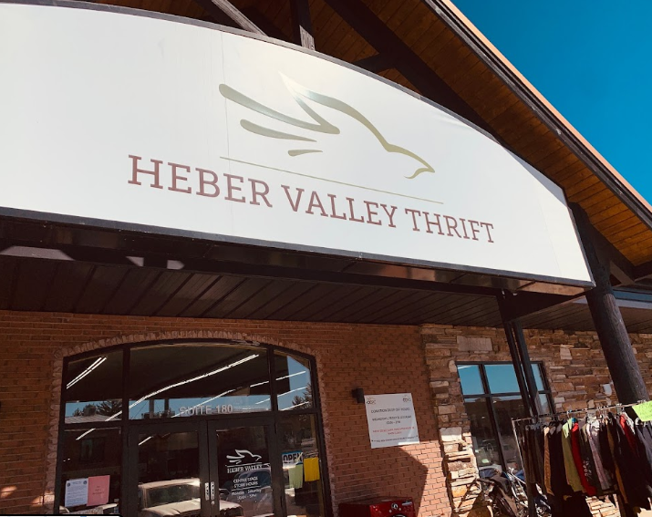

Located at 565 N Main St, Heber City, UT 84032 The Holiday lanes bowling alley is a common attraction for locals and out of towners alike
amenities include, food, alcohol, arcade, pool and of course Bowling.
You can live
We have several major subdivisions in Heber some of which include, Red ledges, Timber lakes, Greener Hills and lake creek farms
of which are all suitable to live in.
Check our local thrift stores

Our two thrift stores The St. Lawrence Thrift (84 S 100 W, Heber City, UT 84032) & The Heber Valley Thrift (55 E Center St #180, Heber City, UT 84032). are very good places to stop by and check out.